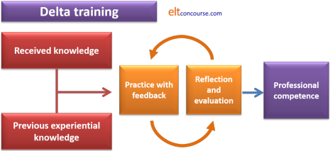

Considering taking the Cambridge Assessment English Delta?
This guide is intended for anyone who is
considering moving on from an initial qualification (such as CELTA)
to a more advanced course in English Language Teaching.
It sets the scene and gets you thinking
about what you need to know and whether you are ready for the
demands of this most prestigious qualification.
Before you go on, if you have not already done so, you will be wise
to read through the Delta overview so talk of Modules and so on will
not be mysterious.
Click here to do that.
(All links mentioned on this page are repeated in the table at the
end.)
 |
Why take Delta at all? |
Mastery of your profession requires more than a short course and a bit of experience. In outline, mastery also involves:
- Subject knowledge: mastery of the structure, grammar, phonology, genres and text types of English and a knowledge of how it differs from other languages.
- Procedural knowledge: mastery of a range of teaching approaches and techniques.
- Methodological knowledge: a thorough understanding of the theoretical underpinnings of a range of approaches and methods in ELT and the ability to link this understanding to classroom practice, course design and planning, including assessment and evaluation of learners' skills and knowledge.
- The ability to consider and take into account specific learner needs.
- The ability to consider and take into account the needs and requirements of other stakeholder (sponsors, parents, national educational authorities etc.).
(For more, see the article on what mastery involves.)
No initial course can provide you with more than a superficial
understanding of these areas but if you want to call yourself a
fully qualified professional you need an in-depth understanding of
all of them.
Many of these will be covered on other sorts of courses such as MAs
in TESOL but few will combine theoretical understanding with an
assessment of the ability to put ideas into practice. It is
also worth noting that, expensive though they are, Delta courses
are around one half to one quarter of the cost of a master's
degree.
The other obvious reasons for taking a course include the fact that the qualification will allow you to progress professionally into academic management, teacher training, materials writing and marketing. Without a qualification at this level, you will be hampered if your ambitions lie beyond the classroom.
Many people feel that having their initial qualification and a
few years' solid experience behind them is all they need to be a
competent and efficient teacher of English. In some cases,
that's true.
However, Delta is not a super CELTA – it is
qualitatively different as well as requiring more of you.
The difference is:
- An initial training course (such as CELTA) begins
from the premise that you know nothing about teaching.
A Delta course starts from the premise that you have acquired through training and/or experience a range of essential teaching behaviours and seeks to build on that. - An initial course relies on tutors modelling teaching
procedures and techniques and getting the trainees to copy what
they do. Feedback on your practice comes from others.
A Delta course focuses on your classroom behaviour and planning skills to refine them and develop in you more alternatives and procedures. Feedback comes from others and from your own reflection on your practice. - An initial course provides the minimum theoretical
background needed for specific lessons and classroom procedures.
A Delta course requires you to do extensive reading and research fully to master the underlying principles of what you do or plan to do in the classroom. - An initial course is incremental in building on each stage
of your training in the expectation that this will lead to some
professional competence by the end of the course.
A Delta course requires you to reflect on your own teaching and seek ways to improve and develop your skills leading to mastery of the skills you need. - CELTA (and one other recognised initial qualification) is at
Level 5 of the Ofqual scheme in Britain, i.e., at
the same level as a foundation degree or higher education
diploma, and is a taught course in its entirety.
Delta is at Level 7 of the same scheme, i.e., at the same level as a Master's degree, and requires much more independent work and study.
If you prefer a diagram:
|  |
The aims of both sorts of course are the same – professional competence – but the level and the ways of getting there differ markedly.
 |
Understanding the three parts of Delta |
This is very brief. For details, go to
the Delta
overview.
There are three Modules:
| Module One | Understanding Language, Methodology
and Resources. It is assessed by an externally marked examination. You do not need to follow a course for this Module. |
| Module Two | Developing Professional Practice. It is assessed through a series of internally assessed teaching assignments and one teaching assignment which is assessed by a Cambridge-appointed and accredited assessor. You must follow a course for this Module. |
| Module Three | Extending Practice and ELT
Specialism or English Language
Teaching Management It is assessed via a long essay marked externally by Cambridge-appointed and Cambridge-trained markers. You do not need to follow a course for this Module. |
The backgroundAre there minimum qualifications to take a Delta Course? |
Ideally, you should have an initial teaching qualification plus at least one year's experience, preferably in more than one setting and with a range of types of learners. However, many course providers will bend these requirements slightly if they believe that you have other, compensating, skills and experience and a good chance of being successful. Other providers may require more, such as a first degree.
To enter for Modules One and Three of the Delta scheme, you don't need to take a course at all so there are no minimum qualifications and background experience requirements.
Additionally, you are required to write, in suitable academic
style over 14,000 words during a Module Two course, not including lesson plans,
so the ability to use English competently and appropriately is
vital.
That applies whether you are a native or a
non-native speaker of English.
Within the Delta section there is
a
guide to writing style for Delta (and any other course at a
similar level).
 |
Choosing a centreWho can I trust for advice about Delta and how do I choose where to take a course? |
The only Module of the Delta for which you must take some kind of
course is Module Two, which includes teaching practice and needs to
be overseen by a qualified tutor.
You do not have to take a course for Modules One and Three and there
is a complete, free Module One course on this site (linked in the list of related guides at the end and
here). Many people do, however, opt to take courses for
Modules One and Three and there are good ones (and some of the other
sort).
What follows is entirely independent advice. This site is not affiliated to any Delta centre or any organisation.
The first choice you need to make is between a face-to-face course provider and an on-line course.
Face-to-face courses |
These are the most common, and the most popular, and there
are centres worldwide offering various forms of face-to-face
courses for some or all the Delta Modules.
Most of these will be enhanced by a form of on-line facility
(often something like a Moodle site) but all assessments of
teaching will be done by qualified tutors.
On most of these courses, too, you will have access to a decent
ELT library and other resources.
You will also, probably, have the opportunity for face-to-face
tutorials with tutors to sort out any difficulties, give you an
honest evaluation of your progress and provide advice and
support.
On these courses, it is the centre which arranges for an external
assessor.
Face to face courses come in three sorts although there are
variations:
- Intensive courses run full-time, typically over an 8- or
10-week period. These courses allow you to focus on
the demands of Delta without the distraction of working to
support yourself. There is usually a good camaraderie
among participants. The learners who form the
teaching-practice classes are generally recruited in the
same way as on initial courses such as CELTA and are often
motivated and friendly volunteers.
If you are taking a course like this away from your home base, you need to factor in the costs of accommodation and that can be quite variable. - Semi-intensive courses run typically over 16 to 20 weeks. These courses are for people who have good time-management skills and can focus on the course as well as holding down a job to pay the bills. Usually, you will have to commit to at least two long evening sessions every week and there will often be a number of weekend sessions as well. On these courses, you will normally teach your own students in your own institution with the tutors travelling to you. That's an advantage many people underestimate.
- Extended courses run over an academic year (at least 9 months) or longer in some cases. On these courses, you will usually have to attend at least one evening session a week but there may be breaks in the programme. On these courses, too, you will usually teach your own students in your own institution. If you take a course like this, you need to be confident that you will be in a teaching job in the area for the duration of the course.
On-line courses |
Preparation for Module One (which is assessed through a written examination) and for Module Three (which is assessed through an externally marked long essay) is reasonably straightforward for on-line course providers. There are lots of paid-for online courses for those two Modules of the Delta but this site has one which is free.
Clearly, however, the first hurdle such courses need to overcome
is how to assess, support and evaluate teaching practice in
Module Two when no qualified tutor is available to observe and
report on teaching assignments.
Centres running distance-learning programmes for Delta Module Two
have developed a variety of solutions to this issue:
- Local Tutors
These sorts of courses rely on a network of local tutors who are not, for the most part, Delta accredited tutors but they are Delta qualified, or should be.
On these courses, it is usually the candidate's responsibility to find a local tutor who will observe teaching, give feedback according to Cambridge's criteria and be able to help and advise with lesson planning, preparation and other Delta Module Two demands.
Local tutors are, normally, trained by the main course provider but you need to bear in mind that such people are not trained, standardised or monitored by anyone else. Quality is inevitably variable and the feedback you receive on your essays, preparation and teaching may not be fully in line with how an external assessor may apply the criteria.
External assessors for the Delta cannot and will not take poor local-tutor advice into consideration when assessing for Module Two. If the advice you have been given is inadequate, you may not pass despite your best efforts.
Better centres also insist that local tutors fulfil a number of other requirements. Check what these are before you entrust a centre with your money. These often include but are not limited to:- Holding a Delta, DTEFLA (Delta's predecessor) or an MA in Applied Linguistics or another qualification such as The Trinity Diploma in Teaching English to Speakers of Other Languages (DipTESOL). You should remember that claiming to hold the Delta means that you have passed all three modules which make it up.
- Being very experienced. This usually means experience of teaching a wide range of levels in a variety of settings.
- Having previous teacher training experience. This
means working as an academic manager involved in training and
supervising teachers, giving talks and seminars, leading
workshops and working on teacher development programmes.
This experience will usually also mean having been
extensively involved
in observing and evaluating teaching.
Be aware that having been a CELTA trainer is not usually considered enough for this role. - Undertaking a training programme. This usually means taking a fairly rigorous course often involving many hours of online work and assignment writing. If the centre you are considering giving your money to does not run a decent training course for local tutors, think carefully.
- Induction courses
Some, not all, distance-learning course providers offer the opportunity to take a one- or two-week induction course during which there will be the opportunity for your teaching to be observed by a properly qualified and experienced Delta tutor. This may involve extra costs but has obvious benefits. - Monitoring
Good providers will, as a matter of course, carefully monitor the performance of local tutors to ensure that all written work is being fairly assessed in accordance with the criteria and that the advice and feedback you are getting is up to the standard required. Make sure you check that this is the case.
There are fewer of these sorts of courses. The Cambridge site where you can
find a course provider lists three distance-learning courses and
they differ little in how the course is delivered. Click
here to go to that site.
If the centre you are considering is not listed on that site, be
very careful to ensure that the standards of local tutors and
monitoring are adequate. Delta is not a cheap option.
Problems you may face

If you decide to all or part of your Delta via an on-line course provider, there are some issues to consider:
- On distance-learning courses you will often have to pay the expenses for an external assessor to come to you and that can be very costly in parts of the world where no assessor is locally based and an assessor may have to travel long distances to get to you.
- If you are working somewhere which does not have a good ELT library or in a place where no such resources are available, you also need to factor in the considerable costs of buying a range of reference materials.
- You will not, usually, have the opportunity to interact with people in the same position as you and bounce ideas around.
- You will not have face-to-face contact with someone who can advise and help. Distance-learning tutors are not available all the time.
- Because there may be large distances (and time zones) separating you from the centre's staff, you may find that they are unable to appreciate the peculiarities of your setting.
- Your local tutor may not be adequately experienced or trained and be applying the criteria for assessment differently from the way Cambridge-appointed assessors for Module Two apply them.
- You have no way to know who is marking your written work or what their levels of training, expertise and experience are.
Whichever form of course you opt for, the factors to consider are the same. You may also like to look at the guide to frequently asked questions about the Delta.
Questions to ask and centres to avoid
Regrettably, Delta has become much like any other commodity.
You get, if you are careful and fortunate, what you pay for.
There are many dedicated, well-informed and able tutors who will
work hard to help you succeed and a few of the other sort, too.
Most organisations who offer Delta courses are doing it to make a
profit. If you appreciate that, you can approach the choices
with a suitably sceptical attitude.
If you take your car to a garage for repair, you do not want the
mechanics to learn how to fix it by practising on your vehicle.
So it is with Delta.
- Is the centre up to date?
If there's a reading list or a library list, how many of the books and references are up to date?
Trust nobody who calls the qualification DELTA instead of Delta. It hasn't been called DELTA for over a decade so anyone still using the old upper-case letters for it is simply sloppy or not paying attention. - Does the centre run a course for Module Two?
Do not trust a centre which only offers Modules One and/or Three. They know, and so do you now, that you don't need to do a course at all for these modules and there is no oversight from Cambridge regarding the tutors or the content of courses ostensibly preparing for Modules One or Three. It is, however, a good way for some organisations to make a few pennies (yours, in this case). - Are the tutors accredited?
A centre that can't also offer preparation for Module Two may not have properly qualified tutors (that's why it isn't accredited to run a course for Module Two).
This is not to say that there aren't good courses out there for Modules One and Three, just that there are more of the other sort. - Are the tutors qualified and experienced?
Delta is a Master's degree level qualification. You will be wise to check that the tutors a centre employs are up to the demands of teaching at that level. The main course tutor, at least, should be someone with many years of experience teaching at this level.
Cambridge Assessment English does not have minimum qualifications for tutors and some are more able, more experienced and more qualified than others. - What are the centre's pass rates?
Be deeply sceptical of any centre that won't give you specific details about their pass rates. Pass rates may not be a precise guide to quality but it's the best measure you have.
Low pass rates may mean- that a centre is so desperate to recruit people (and take their money) that they are taking people on to a course who have no realistic chance of passing or
- that the centre has poor, ill-informed tutors who are not giving people proper advice and not planning a course in a way that allows you the opportunity to build on and develop your knowledge and skills or
- both.
- How does the centre select candidates?
Do not trust a centre that does not interview properly or give you a pre-interview task to complete that really tests you. If candidates are too casually selected, you may find yourself working with people who simply don't know enough or have the right background for the course. This will deny you the opportunity to learn from your peers. - Does the centre set out its and your responsibilities
clearly?
If a centre can't give you with a proper contract setting out what the centre guarantees and what your responsibilities are, walk away. - What pre-course tasks are asked of you?
Good course providers will have a proper pre-course task and reading list. Ask to see what they have and how they will give you feedback on it. If the centre provides nothing or just a list of books to read, consider walking away. Good centres will provide a lot more direction than that and may even give you a copy of what parts of what they think you should read. - Is the course too cheap?
Delta courses are expensive and you need to buy the best quality you can afford. The cheaper a course is, the less likely the centre will be able (or willing) to invest in high quality tutors and decent reference resources and so on. You are not buying a cheese sandwich. - If you go for a distance-learning option:
- What training does the centre provide for local tutors?
- How are local tutors selected and accredited by the centre?
- What qualifications does the centre demand of the local tutor?
- Will the local tutor's advice and grading of assignments be in line with the scheme's criteria for assessment?
- Who is checking?
 |
Preparing for Delta |
The majority of people opt to take a full course for Delta,
preparing for all three Modules at the same time. There is no
requirement to do this because you can enter independently for
Modules One and Three and you can take the Modules in whatever order
you like. Only Module Two, because it involves assessment of
practical teaching skills, requires you to take a course at (or at a
distance from) a
recognised centre with accredited tutors.
Once you have decided how you are going to do the Delta, here are
some places to go on this site to prepare you in terms of language
and skills analysis, methodological background, terminology and
practice.
(All links open in a new page or tab, so close the page to return to
this one.)
| Within the indexes, you will find links to specific areas. | |
| courses on this site | an index of short courses on this site which will help to bridge the gap between an initial qualification and Delta |
| the in-service index | guides to language systems and skills at Delta level |
| the initial plus index | simpler guides to many areas |
| The Bridge | a set of guides falling midway between initial training and diploma-level training focusing on specific, important areas |
| the A-Z index | an index of all the guides in the training sections of this site |
| teacher development index | for some ideas of what to do before a Delta course to develop your teaching skills |
| Guides related specifically to Delta | |
| the Delta index | links to all the Delta-specific topics on this site |
| preparing for Module Two | a short guide to the things you should be doing before you start a Module Two course |
| the Delta overview | to familiarise yourself with the components of the Delta scheme |
| FAQs | the answers to some frequently asked questions about Delta |
| the Delta Module One course | a free preparation course on this site for Delta Module One to prepare you for the examination |
| the Delta Handbook | a free guide to the whole of the Delta scheme to help you before and during a course |